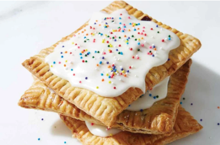

Home
Poptart Recipe

Description
Poptarts are the most delicious snacks, and now you can make them even better at
home! These are a lovely shortcrust pastry that you can fill with whatever you like!
We have examples here for cinnamon sugar and jelly.
Ingredients
Crust
- 2 cups all-purpose flour
- 1 tbsp sugar
- 1 tsp salt
- 16 tbsp unsalted butter, cold
- 1 egg
- 2 tbsp milk
Filling
- 1/2 cup brown sugar
- 4 tsp flour
- 1 1/2 tsp cinnamon
- 1 egg, to brush on pastry before filling
Steps
- To make the dough: Whisk together the flour, sugar, and salt. Work in the butter until the mixture holds together when you squeeze it, with pecan-sized lumps of butter still visible. Mix the egg and milk, and add it to the dough, mixing just until everything is cohesive.
- Divide the dough in half. Shape each half into a rough 3" x 5" rectangle, smoothing the edges. Wrap in plastic or waxed paper, and refrigerate for 30 minutes; this will relax the gluten and firm up the dough a bit, making it easier to roll. You can also refrigerate the dough for up to 2 days; let it rest for 15 to 20 minutes at room temperature before you roll it out.
- To make the filling: Whisk together the brown sugar, flour, and cinnamon.
- To assemble the tarts: Place one piece of the dough on a generously floured work surface, and roll it into a rectangle about 1/8" thick, large enough that you can trim it to an even 9" x 12". Trim off the edges; place the scraps on a baking sheet, and set them aside, along with the 9" x 12" rectangle of dough.
- Roll the second piece of dough just as you did the first. Press the edge of a ruler into the dough you've just rolled, to gently score it in thirds lengthwise and width-wise; you'll see nine 3" x 4" rectangles.
- Beat the egg, and brush it over the entire surface of the dough. Place a heaping tablespoon of filling into the center of each marked rectangle. Place the second sheet of dough atop the first, using your fingertips or a chopstick to press firmly around each pocket of filling, sealing the dough well on all sides.
- Press the tines of a fork (or the chopstick) all around the edge of the rectangle. Cut the dough evenly in between the filling mounds to make nine tarts. Press the cut edges with your fingers to seal, then press with a fork or chopstick to seal again
- Gently place the tarts on a lightly greased or parchment-lined baking sheet. Prick the top of each tart multiple times with a fork; you want to make sure steam can escape, or the tarts will become billowy pillows rather than flat toaster pastries. Refrigerate them, uncovered, for 30 minutes.
- Preheat your oven to 350F
- Bake for 30-35 minutes, until they're a light golden brown.
Original recipe link